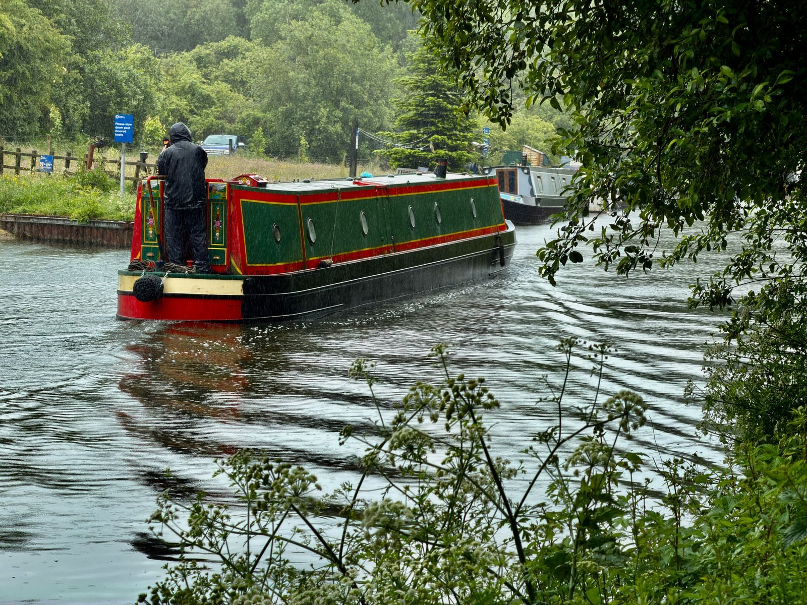

Experto SEO en Birmingham
Del Barrio de las Joyas a Digbeth, de la Plaza de Toros a los canales: los clientes de Birmingham buscan primero lo local. Ayudo a las empresas de Brummie a convertir esas búsquedas en consultas.
Por qué las empresas de Birmingham permanecer invisible
Sigo viendo tres patrones en las empresas de Birmingham y la idea detrás de cada uno de ellos.
Desde Solihull hasta Wolverhampton, los clientes buscan "cerca de mí" todos los días. Si su sitio solo habla de un código postal, el resto irá a otra parte.
Las grandes marcas obtienen términos amplios por defecto. Las empresas locales ganan al ser dueñas de las búsquedas específicas que las cadenas ignoran.
Los compradores de Birmingham consultan las reseñas antes de llamar. Un perfil de revisión delgado ofrece clientes potenciales a quien parezca más confiable.
Toque las tarjetas de arriba: cada problema tiene una solución concreta. Mapeo sus palabras clave suburbio por suburbio, reconstruyo su perfil comercial de Google y soluciono los problemas técnicos que filtran su tráfico móvil. Una persona lo hace todo.

Birmingham es un mosaico: tu SEO también debería serlo
The Jewellery Quarter, Digbeth, Moseley, Harborne, Sutton Coldfield: cada uno tiene su propio comportamiento de búsqueda. Una sola página genérica de “Birmingham” no puede servirles a todos.
Creo páginas con reconocimiento de ubicación y una estrategia de perfil comercial que cubre las áreas que alimentan su negocio, respaldadas por una investigación de palabras clave real, no por conjeturas.
- ✓Mapas de palabras clave a nivel de suburbio en West Midlands
- ✓Perfil comercial de Google con sistemas de revisión y publicación
- ✓Correcciones técnicas: velocidad, móvil, estructura, esquema.
Por qué aquí un especialista gana a una agencia
Las agencias de Birmingham venden anticipos; Vendo resultados que puedo explicar. Obtienes la auditoría, la estrategia y el trabajo mensual de una persona que conoce tu mercado.
Los informes mensuales son sencillos: lo que hice, lo que se movió, lo que sigue. Nunca te preguntarás por qué estás pagando.
LA SOLUCIÓN: cuatro pasos
Cuatro pasos de lo invisible a lo inevitable en la búsqueda de Birmingham.
Su sitio, su perfil comercial y sus competidores de Birmingham: cada debilidad enumerada en orden de prioridad.
Servicios asignados a los códigos postales y frases que atraen a los compradores, desde el centro de la ciudad hasta los suburbios.
Reparaciones técnicas, optimización en la página, trabajo de perfil y contenido útil, en orden de impacto.
Contenido nuevo, citas e impulso de reseñas cada mes, con informes que realmente puedes leer.
Por qué las empresas de Birmingham elige Globe Skillz
Por qué las empresas de Birmingham eligen Globe Skillz.
Un plan. Todo incluido.
- ✓SEO on-page
- ✓SEO técnico
- ✓SEO off-page y autoridad
- ✓10 vínculos de retroceso de publicaciones invitadas cada mes
- ✓Enlaces de socios desde el 3.er mes
- ✓SEO local para 1 zona o ciudad
- ✓SEO con IA: AEO, GEO y AISO
- ✓Informe mensual
- ✓WhatsApp directo o tu plataforma preferida
Un plan para Birmingham. Todo lo anterior, todos los meses. Mes a mes: cancele en cualquier momento.
Consigue tu auditoría SEO gratuita para tu negocio
Revisaré personalmente su sitio y sus competidores de Birmingham y luego le enviaré una lista de acciones prioritarias. Gratis, sin parcela adjunta.
Solicita mi auditoría gratuitaBirmingham preguntas, respondidas.
Respuestas reales para las empresas de Birmingham, a partir de las preguntas que más me hacen. Cualquier otra cosa, pregúntame a continuación.
Áreas que cubro en Birmingham
En West Midlands, el paquete de mapas decide quién recibe la llamada. Estos son los lugares del área de Birmingham para los que optimizo, cada uno cubierto por el mismo SEO local práctico, desde el perfil comercial hasta las reseñas.
Listo para dominar Birmingham?
Reserve una llamada estratégica gratuita de 30 minutos. Auditaré su visibilidad en Birmingham en vivo (su lista de mapas, sus reseñas, sus páginas) y le diré exactamente qué se necesitaría para llegar al top 3.